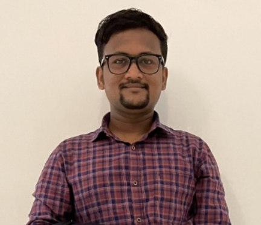

|  |
Pramod Sutar |
I am a Full Stack developer have specilaized in Core Java, HTML and CSS. Also I have knowlede of C, C++, MySQL, GitHub, Linux, Data Structure & Algorithm. My project area is in HTML,CSS, Java, MySQL. I am looking for apportunity of Software Developer.
| Operating System: | Linux, Windows 10 |
| RDBMS: | MySQL, Oracle 11g, MS Access |
| FrontEnd: | Bootstrap,css3,java |
| Languages |
Java(Core+Advance),C#,C,C++, |
| Degree | Institute | Percentage/CGPA |
|---|---|---|
| BE(Civil) | TKIET Warananagar | 72.19 |
| MTech(Environment) | Shivaji University Kolhapur | 8.94 |
| CDAC | CDAC Delhi | 80 |